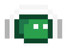

SpotyTube
O clipe acompanha a música.
Spotify
- Acesse developer.spotify.com/dashboard e faça login.
- Create app: nome livre; em Redirect URIs cole exatamente a URI acima (incluindo a
/final); em “Which API/SDKs are you planning to use?” marque Web API; aceite os termos. - Abra o app → Settings → copie o Client ID e cole acima. Não precisa de Client Secret (usamos PKCE).
- Se o app estiver em Development Mode e o dashboard tiver User Management, adicione o e-mail da sua conta Spotify.
- Clique em “Conectar Spotify”.
- Se você mover a pasta da extensão sem a chave fixa no manifest, o ID muda: atualize a Redirect URI no dashboard.
—
Para revogar o acesso no lado do Spotify: spotify.com/account/apps.
YouTube
Aba do clipe
Ação YouTube → Spotify
Cache
…